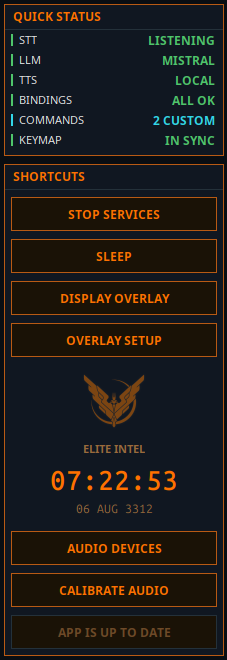
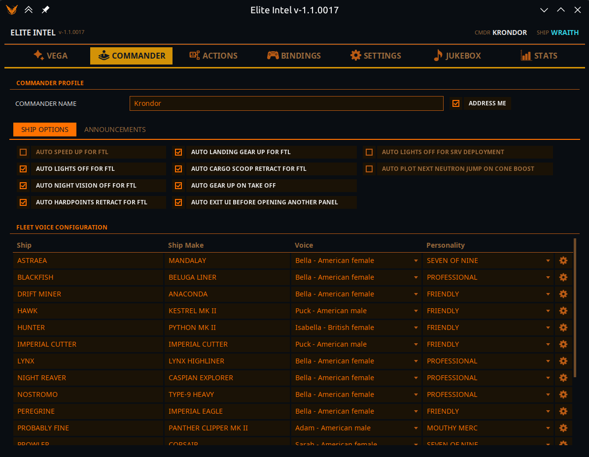
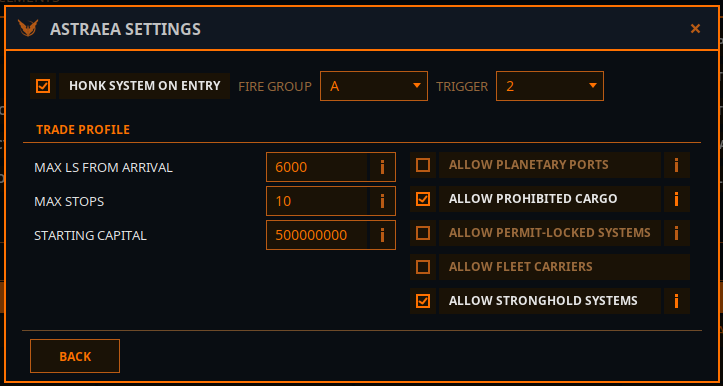
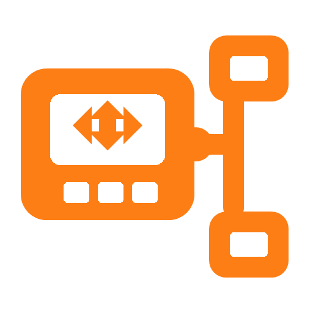
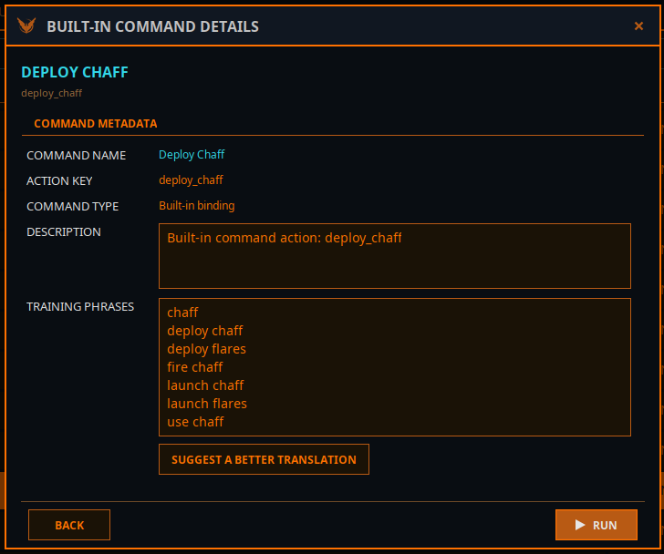
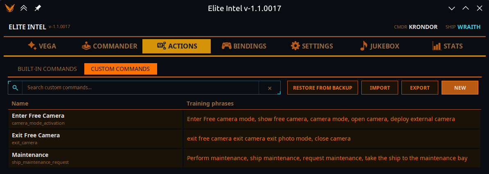
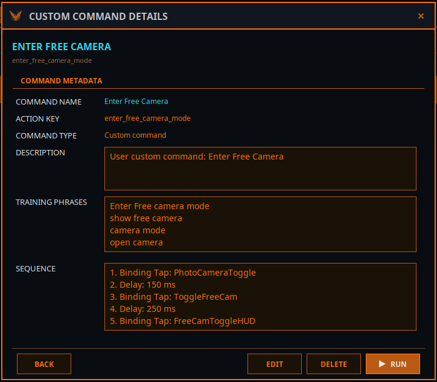

UI and Configuration Options
AI Tab 
This is the main/default tab.
 |
- Start / Stop Services: Toggles the AI stack on/off. - Wake/Sleep: In wake mode app listens all the time, in Sleep mode app will ignore input unless PTT button pressed, "Listen" bypass word is used or "Wake up!" command issued. - OBS Overlay: Displays a black overlay window with Commander / AI interraction. Add to OBS, key-off black background - Audio Devices: Select audio device for input/output- Calibrate Audio: Run Audio Calibration for better performance. |
Player Tab

- Commander Name: Use this field to override your in-game name for Text-to-Speech.
- Ship Options: You can toggle these automations on and off. Useful for commanders with disabilities
- Fleet Management: Assign voices, personalities, and cadence to individual ships. Personality only works with cloud LLMs. The gear icon opens up ship's proeperties such as auto-honk and trade profile"

- Honk System On Entry: Select fire group and trigger. If this option is checked the ship will perform discovery scan on entry. If your HUD is in Combat mode, it will swap to Analysis, perform the scan and swap back.
- Customize your trade profile: These parameters can be set on the user interface, or via voise commands: "alter/change trade profile set [parameter] to [value]"
Actions Tab


Actions / Bindings tab has three sections. Bindings, Built-in Commands and Custom commands.
- Bindings directory is where you game bindigs file located. Without it the app can't operate in game controls
- Profile is your current in-game bindings profile.
- File is the file that contains the bindings you are currently using
You can modify your bindigs using this screen and save it as a new profile.
NOTE- HOTAS/CONTROLLERS are displayed but cannot be set through this screen. Keboard binds only (subject to change in the future)
Actions / Built-In Commands

Provides a list of built-in commands. Double-clicking on one will show a dialog box with information about the command and allow you to propose a better translation for localization.
Custom Commands

This screen allows you to define a custom action that app will execute on your command.
- Click NEW button this will open a popup window where you can define your custom action.

- Enter action name. NOTE: The action name must contain words (tokens) separated by underscores _
- Provide a name for your custom action
- Provide desccription for your custom action
- Enter training words, those are meaning tokens. The LLM will attempt to match the sopken command to the action using highest probability. The more probable your tokens to match the action to more changes it will be returned.
To use custom actions speak normally, you do not need to memorize the exact words, but you must convey a presise meaning for LLM to match it to your command with highest probability.
For issues, contact via Matrix. Bug reports and pull requests are welcome.
Community 👉Matrix👈